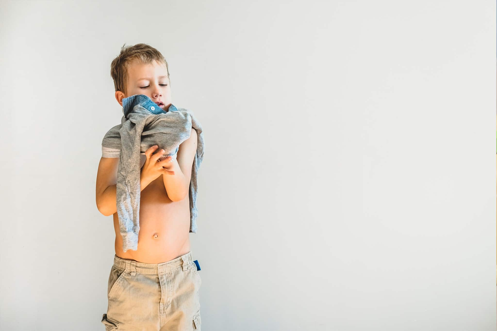

"אני יכול לבד"
כמה פעמים מצאתם את עצמכם מלבישים את הילד כי זה יותר מהיר? כמה פעמים האכלתם אותו כדי שיהיה פחות לכלוך מסביב? או קילחתם אותו כדי שבטוח יהיה נקי? שלא נדבר על לסדר עבורו את תיק בית הספר כדי שלא ישכח כלום, או את התיק לטיול. כמה פעמים סידרתם עבורו את החדר או את הארון כי אחרת זה לא באמת מסודר?
מה בין זה לבין עצמאות?
חשבתם פעם מה המסר שאנחנו מעבירים לילדינו כשאנחנו עושים עבורם דברים שהם כבר מסוגלים לעשות לבד? האמינו בילדכם ואל תעשו דברים במקומו, גם אם זה לא נראה בדיוק כפי שהייתם רוצים. כל דבר שהילד יכול לעשות לבד — אפשרו לו לעשות, בהתאם להתפתחותו, יכולותיו ומגבלותיו.
כאשר אנחנו ההורים עושים עבור ילדינו, גם אם מתוך אהבה גדולה ורצון טוב, אנו עלולים לפגוע בתחושת המסוגלות שלהם. העצמאות מחזקת את האמון של הילד בכוחותיו ומפתחת את תחושת הביטחון העצמי וההכרה שלו ביכולותיו. ככל שתהליך העצמאות מתקדם יותר, כך הולכת וגוברת תחושת המסוגלות והערך העצמי.
גם בתחום הרגשי והחברתי נוטים הורים רבים להתערב ולפתור "בעיות" שמתעוררות לילדיהם. זה יכול להיות מריבה עם חבר או מול המורה, וההורים מיד יוצאים להגנתו של הילד ופועלים במקומו לפתרון הבעיה.
אם ברצונכם לטפח עצמאות אצל ילדכם, עדיף לתת לו להתמודד. הילד נקלע למריבה? אל תמהרו להתערב — הקשיבו לו. שאלו שאלות כמו: מה לדעתך צריך לעשות? איך נראה לך שאפשר לפתור את זה? נסו להביא את הילד לחשיבה עצמאית לפתרונות, במקום לומר את כל הפתרונות בעצמכם.
ילד שלא גדל לעצמאות יתקשה להתמודד בצורה טובה עם משימות החיים, ויהיה תלוי באחרים במידה רבה. כדי שיגדל להיות אדם שמאמין בעצמו, מרגיש משמעותי ומממש את יכולותיו — נדרשת ממנו קודם כל עצמאות.
חינוך לעצמאות מתחיל אצלנו ההורים. אנו מוכרחים לשחרר ולאפשר לילד להתנסות. עלינו לסמוך עליו שהוא יכול, ולהבין שהדברים לא תמיד יראו כמו שאנחנו היינו מצפים או רוצים — אך הם יהיו בדרכו. אנו נהיה שם כדי לאהוב, לעודד, לשבח, לתמוך, לכוון, להרגיע, ללמד וללוות אותו בדרך הארוכה לעצמאות.
אורית.
מעוניינים לדעת עוד? אורית זמינה לשאלות ופגישות ייעוץ.
צרו קשר